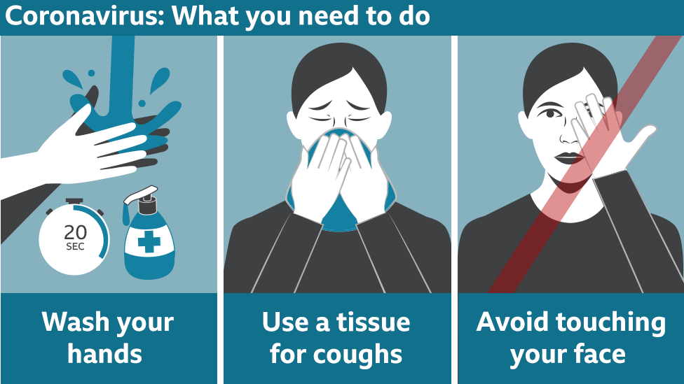

Covid virus 'survives for 28 days' in lab conditions
1 hours ago
These results highlight the need to wash hands as well as touchscreens regularly
The virus responsible for Covid-19 can remain infectious on surfaces such as banknotes, phone screens and stainless steel for 28 days, researchers say.
The findings from Australia's national science agency suggest SARS-Cov-2 can survive for far longer than thought.
However, the experiment was conducted in the dark. UV light has already been shown to kill the virus.
Some experts have also thrown doubt on the actual threat posed by surface transmission in real life.
The coronavirus is mostly transmitted when people cough, sneeze or talk.
But there is also evidence that it can also be spread by particles hanging in the air. It is also possible someone could get Covid-19 by touching infected surfaces such as metal or plastic, according to the US Centers for Disease Control. This is believed to be much less common, however.
What does the study say?
Previous laboratory tests have found that SARS-Cov-2 can survive for two to three days on bank notes and glass, and up to six days on plastic and stainless steel, although results vary.
In comparison, the flu virus can survive in the same circumstances for 17 days.
The study, published in Virology Journal, also found SARS-Cov-2 survived for less time at hotter temperatures than cooler temperatures; it stopped being infectious within 24 hours at 40C on some surfaces.
It also stayed longer on smooth, non-porous surfaces than on porous materials such as cloth, which was found not to carry any infectious virus past 14 days.
Prof Ron Eccles, former director Common Cold Centre at Cardiff University, criticised the study and said the suggestion that the virus could survive for 28 days was causing "unnecessary fear in the public".
"Viruses are spread on surfaces from mucus in coughs and sneezes and dirty fingers and this study did not use fresh human mucus as a vehicle to spread the virus," he said.
"Fresh mucus is a hostile environment for viruses as it contains lots of white cells that produce enzymes to destroy viruses and can also contain antibodies and other chemicals to neutralise viruses.
"In my opinion infectious viruses will only persist for hours in mucus on surfaces rather than days."
In a paper published by the Lancet in July, Emanuel Goldman, professor of microbiology at Rutgers University, said "the chance of transmission through inanimate surfaces is very small". He said studies that suggested a significant risk had been designed with "little resemblance to real-life scenarios".
Last week Monica Gandhi, a professor of medicine at the University of California, said the coronavirus did not spread via surfaces.
Study highlights needs to clean hands and touchscreens
Covid-19 spreads primarily through the air. Studies have shown that the virus can remain infectious in airborne particles for more than three hours. What's less certain is the degree to which it can spread via surfaces such as banknotes and touchscreens.
Previous studies have assessed its survivability on stainless steel and their results have varied wildly, ranging from between three and 14 days at room temperature. The new study looked at how long the virus could survive on glass, paper and plastic notes as well as steel. They found that they could detect it after 28 days on all these surfaces at 20C - significantly longer than the earlier studies had indicated.
The experiments were, however, carried out in virus friendly conditions - in a dark room with stable temperatures and humidity - so the virus may well not do so well in the real world.
Even so, these results highlight the need to wash hands as well as touchscreens regularly and to avoid touching one's face in order to minimise the risk of infection.
Why does this matter?
"Establishing how long the virus really remains viable on surfaces enables us to more accurately predict and mitigate its spread, and do a better job of protecting our people," said CSIRO chief executive Dr Larry Marshall.

The study's authors said the ability of SARS-Cov-2 to persist on stainless steel at cooler temperatures could explain outbreaks of Covid-19 at meat processing and cold storage facilities.
Thousands of workers have tested positive at meat processing factories and abattoirs around the world.
Other reasons previously suggested include close working conditions, cold and damp environments and the need to shout over noisy machinery.
The CSIRO researchers also say their findings support previous research suggesting the virus can survive on fresh and frozen food.
The World Health Organization says: "There is currently no confirmed case of Covid-19 transmitted through food or food packaging." But it does list a number of precautions you can take to avoid cross-contamination.